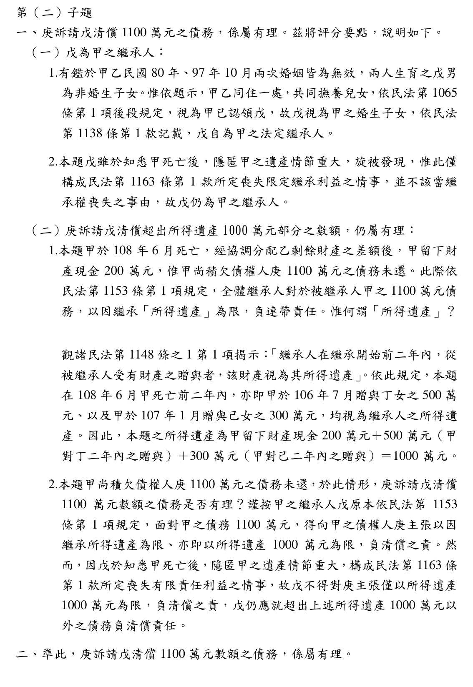
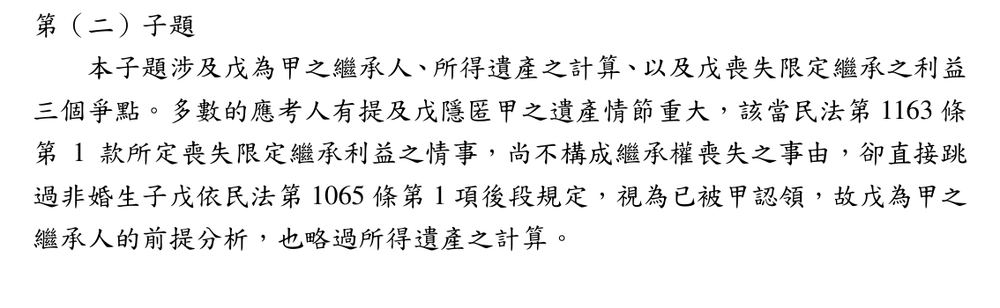

甲欠1100萬，只留200萬，戊要全還嗎？
111年律師第二試｜民法與民事訴訟法（一）｜第二題第（二）小題（10分）
題目
這一題有三個小題。本頁只做第（二）小題，用得到的事實畫黃色底線。
- （一）假設乙曾於105年10月向法院訴請確認甲乙婚姻無效，並請求甲為夫妻剩餘財產差額之平均分配。乙之訴，是否有理？（20分）
- （二）甲死亡後，若經協調分配乙剩餘財產之差額後，甲遺有現金200萬元，惟甲尚欠債權人庚1100萬元未還。庚訴請戊清償上開1100萬元之債務，是否有理？（10分）本頁只做這一題
- （三）甲死亡後，若經協調分配乙剩餘財產之差額後，甲遺有現金700萬元，且無任何債務。甲之遺產應如何分配？（20分）
影片說明
影片依序示範：主播介紹、整題讀一遍並框出第（二）小題、關係圖、學弟學姊帶出三步、第1065條撫育視為認領、二年窗與所得遺產、遺產袋變成盾牌又碎掉、三個易錯點，最後把擬答從頭看一遍。
關係圖與時間線
本小題的主角是戊；丙丁己的受贈只用來計算所得遺產。
| 日期 | 事件 | 在不在死亡前2年內？ |
|---|---|---|
| 105.12 | 甲贈與丙200萬元（考上高考的獎賞） | ✕ 已逾2年 |
| 106.7 | 甲贈與丁500萬元（結婚） | ✓ 在內 |
| 107.1 | 甲贈與己300萬元（開店營業） | ✓ 在內 |
| 108.6 | 甲死亡（往回推2年為106年6月） | 計算基準 |
題目只寫到月份；以月份判斷，106年7月、107年1月都在106年6月之後。
答題順序：三步
閱卷委員指出，多數考生直接寫第1163條，卻跳過戊為什麼是繼承人，也略過所得遺產的計算。
本題用到的條文
先看要件，再套本案事實。原文中畫底線的部分，就是本題用到的那一句。
民法第1065條第1項、第1138條：戊是繼承人（第①步）
非婚生子女經生父認領者，視為婚生子女。其經生父撫育者，視為認領。（第1065條第1項）
遺產繼承人，除配偶外，依左列順序定之：一、直系血親卑親屬。……（第1138條，節錄）
白話沒有結婚的父母生的孩子，只要父親有撫養，就當作父親已經認領，和婚生子女一樣可以繼承。
本題甲乙婚姻無效（第（一）小題），戊是非婚生子女；甲乙同住一處，共同撫養兒女，戊視為已被甲認領，是第一順序繼承人。
民法第1148條之1：死亡前二年內的贈與（第②步）
繼承人在繼承開始前二年內，從被繼承人受有財產之贈與者，該財產視為其所得遺產。
前項財產如已移轉或滅失，其價額，依贈與時之價值計算。
白話被繼承人過世前兩年內送出去的財產，要算回「所得遺產」裡，避免先把財產送光、再用限定責任逃債。
本題現金200萬元＋丁500萬元＋己300萬元＝1000萬元；丙的200萬元已逾2年，不算。
注意條文寫「繼承人」受贈。丁已喪失繼承權、己與甲同時死亡，嚴格說都不是繼承人，能否計入有疑問；評分要點計入。無論算不算，本題「戊應清償全部1100萬元」的結論都不變。本頁說明
民法第1148條第2項、第1153條第1項：限定責任（第③步）
繼承人對於被繼承人之債務，以因繼承所得遺產為限，負清償責任。（第1148條第2項）
繼承人對於被繼承人之債務，以因繼承所得遺產為限，負連帶責任。（第1153條第1項）
白話繼承人原則上只用繼承來的財產還被繼承人的債，不必拿自己的錢。
民法第1163條：喪失限定責任的利益（第③步）
繼承人中有下列各款情事之一者，不得主張第一千一百四十八條第二項所定之利益：一、隱匿遺產情節重大。二、在遺產清冊為虛偽之記載情節重大。三、意圖詐害被繼承人之債權人之權利而為遺產之處分。
白話藏遺產、在清冊作假、為了害債權人而處分遺產，就不能再主張只用遺產還債。
注意這只是喪失「限定責任」的利益，不是喪失繼承權；喪失繼承權的事由規定在第1145條。
條文依全國法規資料庫現行條文核對（2026-11-23）；甲於108年死亡時，上列條文已是現行內容。
答題地圖
考選部評分要點與閱卷委員的話

閱卷委員的話：
- 本子題有三個爭點：戊為甲之繼承人、所得遺產之計算、戊喪失限定繼承之利益。
- 多數考生有提到隱匿遺產情節重大屬第1163條第1款，不是喪失繼承權。
- 但多數考生跳過戊依第1065條第1項後段視為認領而為繼承人的前提，也略過所得遺產的計算。

來源：考選部〈111年司法官、律師考試第二試法律專業科目評分要點與閱卷委員的話〉民法與民事訴訟法（一）第6、7、10頁，已用PyMuPDF轉成圖片逐頁核對。
擬答
庚之請求有理由。
一、戊為甲之繼承人
甲乙婚姻無效，戊為非婚生子女；惟甲乙同住一處，共同撫養兒女，戊經甲撫育，視為認領（第1065條第1項後段），依第1138條第1款為甲之繼承人。
二、所得遺產之計算
繼承人在繼承開始前二年內從被繼承人受有財產之贈與者，該財產視為其所得遺產（第1148條之1第1項）。甲於108年6月死亡，106年7月贈與丁500萬元、107年1月贈與己300萬元，均在二年內；105年12月贈與丙200萬元已逾二年，不予計入。所得遺產為現金200萬元加計500萬元、300萬元，共1000萬元。
三、戊應清償全部債務
繼承人原以所得遺產為限，對被繼承人之債務負連帶責任（第1148條第2項、第1153條第1項），戊本得主張僅於1000萬元範圍內清償。惟戊隱匿遺產情節重大，依第1163條第1款不得主張上開利益；此非喪失繼承權之事由，戊仍為繼承人，應清償全部1100萬元。
擬答389字（含標題、標點與數字，不含空白，以程式計算）。10分題目參考上限165字（120分鐘×10/150＝8分鐘，扣讀題3分鐘，5分鐘×每分鐘約33字）。本版為了把計算寫完整而超過上限；考場上可視時間把第二段濃縮成一句「死亡前二年內對丁、己之贈與視為所得遺產，連同現金共1000萬元（第1148條之1）」。
互動：換一個情況，戊要還多少？
關鍵是「所得遺產多少」和「戊能不能主張限定責任」。先自己想想，再點。
第二、三個分頁是本頁為了比較所做的假設，金額由頁面程式計算。本頁推論
學說補充
第1148條之1「繼承人」是否包括已喪失繼承權、或與被繼承人同時死亡之人，本頁尚未加入可核對的學說文獻。
預想易錯點
①②依閱卷委員的話整理，③依評分要點整理。
| 可能的錯誤 | 應該怎麼寫 |
|---|---|
| ① 直接寫隱匿遺產，沒說戊為什麼是繼承人 | 先寫婚姻無效、戊為非婚生子女，經甲撫育視為認領（第1065條第1項後段）。 |
| ② 略過所得遺產的計算 | 寫出第1148條之1，算出200＋500＋300＝1000萬元，並說明丙的贈與已逾二年。 |
| ③ 把隱匿遺產當成喪失繼承權 | 第1163條只是不得主張限定責任，戊仍為繼承人。 |
延伸思考
參考資料
歡迎指正
相關連結
民法講義總覽 下一題：111年第二題（三）700萬元，三房怎麼分？ 上一題：111年第二題（一）結婚兩次都無效，還能分財產嗎？ 相關：112年第二題（二）甲與戊的繼承人 GitHub 原始檔